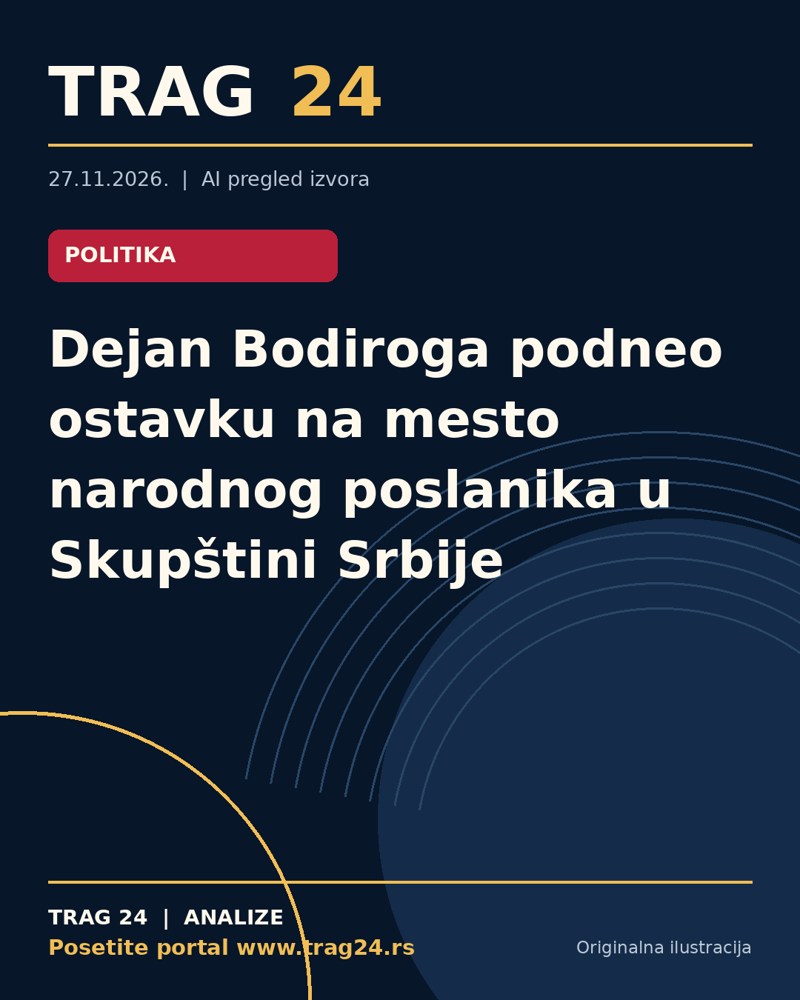

Dejan Bodiroga podneo ostavku na mesto narodnog poslanika u Skupštini Srbije

ŠTA SE DOGODILO
Dejan Bodiroga, nekadašnji proslavljeni košarkaš i bivši predsednik Evrolige, podneo je ostavku na mesto narodnog poslanika u Skupštini Srbije. Pored njega, ostavke su dali i narodni poslanici Marko Korać i Dženan Palamar sa različitih izbornih lista.
HRONOLOGIJA
Ostavke su podnete nedavno, a sednica na kojoj će se razmatrati i odlučivati o prihvatanju ovih ostavki zakazana je za ponedeljak. Do tada Bodiroga i ostali poslanici ostaju na svojim dužnostima i mogu pružiti dodatne informacije o svojim odlukama.
ŠTA NAVODE IZVORI
Izvor N1 kontaktirao je Bodirogu koji je naveo da će više detalja biti poznato u danima nakon sednice Skupštine, odnosno u ponedeljak ili utorak. Svi izvori potvrđuju da su ostavke formalno podnete i da njihovo razmatranje sledi u parlamentu. Bodiroga je prepoznat kao jedan od najuspešnijih evropskih košarkaša svoje generacije, a njegovo političko angažovanje bilo je predmet medijskih izveštaja.
ŠTA JE POTVRĐENO
Potvrđeno je da su Dejan Bodiroga, Marko Korać i Dženan Palamar podneli ostavke na pozicije narodnih poslanika. Zakazana je sednica Skupštine Srbije na kojoj će se odlučivati o prihvatanju ostavki. Do tada, Bodiroga i ostali ostaju u funkciji. Bodiroga je istaknuto sportsko ime sa uspešnom profesionalnom karijerom u košarci, što je saglasno navodima u svim izvorima.
ŠTA NIJE POTVRĐENO
Do momenta objave nije potvrđeno da li će Skupština prihvatiti ostavke ili na koji način će biti popunjene pozicije narodnih poslanika nakon eventualnog prihvatanja. Takođe, nisu poznati razlozi zbog kojih su Bodiroga i ostali podneli ostavke, kao ni budući planovi Bodiroge u političkoj ili nekoj drugoj sferi.
ŠTA OSTАJE OTVORENO: Ostaje da se vidi kako će Skupština Srbije postupiti po ovim ostavkama i da li će votum poverenja biti izražen ili odbijen. Takođe, javnost će pratiti dalje izjave i aktivnosti Dejana Bodiroge, kao i eventualne informacije o njegovom daljem angažmanu ili povlačenju iz politike.
Izvori
- https://www.danas.rs/vesti/politika/bodiroga-podneo-ostavku-poslanik/
- https://www.novosti.rs/vesti/politika/1675414/dejan-bodiroga-podneo-ostavku-funkciju-narodnog-poslanika
- https://n1info.rs/vesti/dejan-bodiroga-podneo-ostavku-na-mesto-narodnog-poslanika/
Ova analiza je pripremljena uz pomoć veštačke inteligencije na osnovu javno dostupnih izvora. Navodi izvora nisu nužno nezavisno potvrđeni.